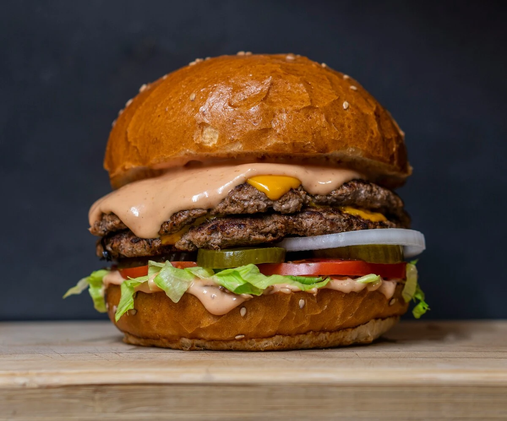

Delicious Burger Recipes

Description
A burger is a simple and delicious dish made with a soft bun, juicy
grilled beef patty, fresh lettuce, sliced tomato, cheese, and sauce. The
combination of savory meat, fresh vegetables, and creamy sauce makes it a
perfect choice for a satisfying meal.
Ingredients
- 1 burger bun
- 100 g ground beef
- 1 slice of cheese
- 2 lettuce leaves
- 2 slices of tomato
- 1 tablespoon mayonnaise
- 1 tablespoon tomato sauce
- Salt and pepper to taste
- 1 teaspoon cooking oil
Steps
- Season the ground beef with salt and pepper.
- Grill or fry the patty until fully cooked.
- Toast the bun and add the ingredients.
- Close the bun and serve while warm.
Home